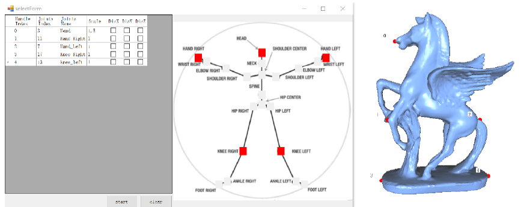
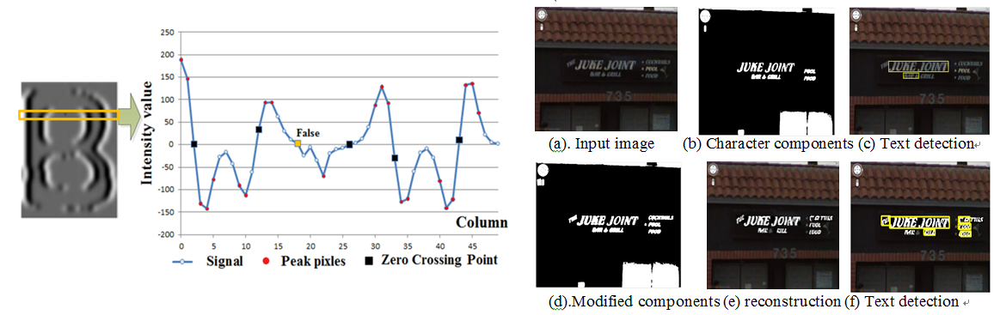
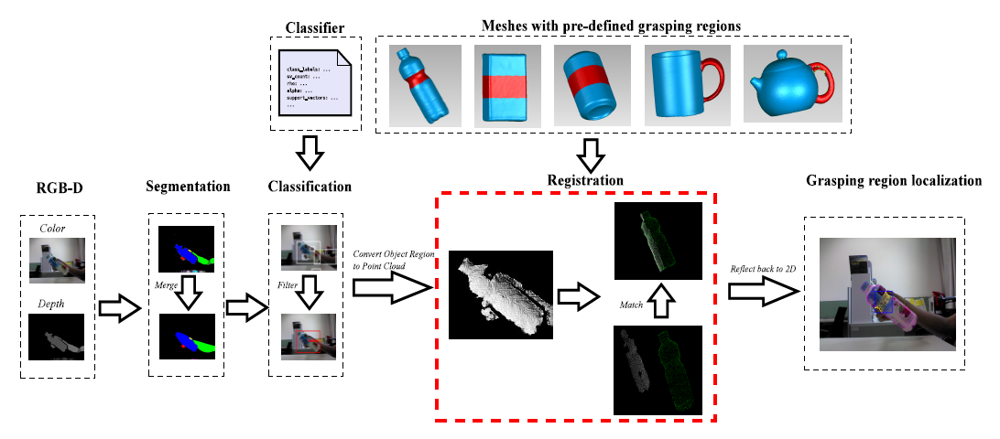

<!DOCTYPE HTML>
<html>
<head>
<meta http-equiv="Content-Type" content="text/html; charset=UTF-8" />
<title>Yirui Wu's HomePage</title>
<meta name="viewport" content="initial-scale=1.0,width=device-width" />
<link rel="stylesheet" href="css/style.css" type="text/css" media="screen" />
<link rel="stylesheet" href="css/prettyPhoto.css" type="text/css" media="screen" />
<link rel="stylesheet" href="css/print.css" type="text/css" media="print" />
</head>
<body>

<!--STICKER-->
<div id="sticker"></div>

<div id="wrapper">

<!--BIO TITLE-->
<h2 id="titleName" class="sectionHead">巫义锐</h2> 

<!--BIO-->
<div id="bio">
    <h3>河海大学计算机与信息学院，讲师</h3>
	<h2>电邮: wuyirui@hhu.edu.cn</h2>
	<h2>地址: 南京市河海大学江宁校区勤学楼4123室<h2>
   <a href="./index.html"><font color="#0000FF">[English Version]</font></a>
   
    <div id="ImageIcons">
        
		
		<!--MORE ICON OPTIOPS...
		<a class="socialIcon" target="_blank" id="flickrIcon" href="#>"></a>
		<a class="socialIcon" target="_blank" id="vimeoIcon" href="#"></a>
		<a class="socialIcon" target="_blank" id="mySpaceIcon" href="#"></a>
		<a class="socialIcon" target="_blank" id="rssIcon" href="#"></a>
		-->
	</div><!--end socialIcons-->
	

	<!--BIO PARAGRAPH-->
	<p>	
		

 巫义锐，男，工学博士，河海大学计算机与信息学院讲师，研究方向为计算机视觉、模式识别、计算机图形学与多媒体系统。我于2011年在南京大学计算机科学与技术系获得理学学士学位，同年被保送至南京大学计算机科学与技术系攻读博士学位，并于2016年获得工学博士学位。在我的博士学习期间，我的指导老师是<a href="http://cs.nju.edu.cn/lutong/">路通教授</a>，并和<a href="https://umexpert.um.edu.my/shiva">Shivakumara Palaiahnakote博士</a>保持了紧密合作关系。我曾于2012年和2014年两次访问香港科学与技术大学，并接受了<a href="http://home.cse.ust.hk/~taicl/">戴秋兰教授</a>和<a href="http://sweb.cityu.edu.hk/kincau/">欧建忠博士</a>的指导。我作为项目组成员参与了国家自然科学基金等多个研究课题。我于权威国际刊物《IEEE Transactions on Image Processing》、《IEEE Transactions on Multimedia》、《Computer-Aided Geometric Design》、《International Journal on Document Analysis and Recognition》及高水平国际学术会议ACM Multimedia、ICME、ICPR、GMP、MMM、PCM等发表学术论文十余篇，所研制的关键技术已获得中国发明专利授权三项。相关专利成果已在国家级高新技术企业和江苏省高新技术企业得到应用转化；根据专利成果研制的系统通过了国家安全防范报警系统质量检测中心（上海）、公安部安全防范报警系统产品质量监督检验测试中心的现场检测。获南京大学优秀毕业生，国家奖学金，光华奖学金，南京大学优秀研究生干部等称号。我的<a href="./papers/MyCV.pdf">中文简历</a>可以点此下载。
	</p>
	
</div><!--end bio-->

<div class="clear"></div>

<!--EXPERIENCE TITLE-->
<h2 id="clock" class="sectionHead">新闻</h2>
<li>2016.10.23: <font color="#FF0000"> 一篇文章被会议MMM 2017录用，恭喜周逸徉.</font></li>
<li>2016.9.12: <font color="#FF0000"> 一篇文章被期刊IEEE Transactions on Multimedia (TMM) 录用.</font></li>
<li>2016.8.29: <font color="#FF0000"> 一篇文章被期刊IEEE Transactions on Image Processing (TIP) 录用.</font></li>
<li>2016.7.15: <font color="#FF0000"> 一篇文章被会议ICPR 2016录用，恭喜周先礼.</font></li>


<!--SKILLS TITLE-->
<h2 id="tools" class="sectionHead">研究兴趣</h2>

	<li><strong>模式识别</strong>: 场景图像与视频中的文字信息恢复，检测与识别。</li>
    <li><strong>计算机图形学</strong>:  三维几何建模与处理问题，包括模型变形、模型分割和形状匹配。</li>
    <li><strong>多媒体系统</strong>: 构建高效、易用的人机交互界面或系统。</li>


<div class="clear"></div>

<!--AS SEEN ON TITLE-->
<h2 id="eye" class="sectionHead">学术论文及专利  <a href="http://dblp.uni-trier.de/pers/hd/w/Wu:Yirui"><font color="#0000FF">[完整论文列表]</font></a></h2> 
<div><h3>期刊论文</h3></div>
<p>	[J1]. <strong>Yirui Wu</strong>, Tong Lu, Zehuan Yuan, Hao Wang. <font color="#2DAAA0">FreeScup: a novel platform for assisting sculpture pose design.</font> IEEE Transactions on Multimedia, online publication, 2016. (SCI, CCF-B, an extended version of our ICME paper) <a href="./papers/IJDAR15_Yirui.pdf"><font color="#0000FF">[论文]</font></a>   <a href="./bibtex/IJDAR15_Yirui.bib"><font color="#0000FF">[BibTex]</font></a></p>
<div align="center"></div>
<p><strong>概要</strong>: Sculpture design is challenging due to its inherent
difficulties in characterizing artworks quantitatively, thus few
works have been done to assist sculpture design in the past
decades in the multimedia community. We have cooperated with
several sculptors by analyzing different artwork styles consisting
of Giacometti, Augeuste Rodin, Henry Moore and Marino Marini,
from which we find pose editing plays an important role in
sculpture design. Motivated by this, we present a novel platform
that allows sculptors to edit virtual 3D sculptures by a free way to
inspire fantastic ideas efficiently. </p>

<br />

<p>	[J2]. <strong>Yirui Wu</strong>, Palaiahnakote Shivakumara, Tong Lu*, Chew Lim Tan, Michael Blumenstein, G. Hemantha Kumar. <font color="#2DAAA0">Contour restoration of text components for recognition in video/scene images</font>. IEEE Transactions on Image Processing, online publication, 2016. (SCI, CCF-A) <a href="./papers/IJDAR15_Yirui.pdf"><font color="#0000FF">[论文]</font></a>   <a href="./bibtex/IJDAR15_Yirui.bib"><font color="#0000FF">[BibTex]</font></a></p>
<div align="center"></div>
<p><strong>概要</strong>: Text recognition in video/natural scene images has gained significant attention in the field of image processing in many computer vision applications, which is much more challenging than that in plain background images. In this work, we aim to restore complete character contours in video/scene images from gray values, in contrast to the conventional techniques that consider edge images/binary information as inputs for text detection and recognition. </p>

<br />

<p>	[J3]. <strong>Yirui Wu</strong>, Oscar Kin-Chung Au, Chiew-Lan Tai, Tong Lu. <font color="#2DAAA0">HIRM: a handle-independent reduced model for incrememntal mesh editing</font>. Computer-Aided Geometric Design, 35(36):56-68, 2015.  (SCI, CCF-B) <a href="./papers/CAGD15_Yirui.pdf"><font color="#0000FF">[论文]</font></a><a href="./bibtex/CAGD15_Yirui.bib"><font color="#0000FF">[BibTex]</font></a></p>
<div align="center"></div>
<p><strong>概要</strong>: Most existing handle-based mesh deformation methods require costly re-computation for every handle set updating, namely, adding or removing of handles on the mesh surface. In this paper, we propose a reduced deformation model that is independent of handle configuration, allowing users to dynamically update the handle set without noticeable waiting time. </p>

<br />


<p>	[J4]. <strong>Yirui Wu</strong>, Palaiahnakote Shivakumara, Wei Wang, Tong Lu, Umapada Pal. <font color="#2DAAA0">A new ring radius
transform based thinning method for multi-oriented video characters</font>. International Journal on Document
Analysis and Recognition (IJDAR), 18(2):137-151, 2015. (SCI, CCF-C) <a href="./papers/IJDAR15_Yirui.pdf"><font color="#0000FF">[论文]</font></a>   <a href="./bibtex/IJDAR15_Yirui.bib"><font color="#0000FF">[BibTex]</font></a></p>
<div align="center"></div>
<p><strong>概要</strong>: Thinning that preserves visual topology of characters
in video is challenging in the field of document analysis
and video text analysis due to low resolution and complex
background. This paper proposes to explore ring radius transform
(RRT) to generate a radius map from Canny edges of
each input image to obtain its medial axis. </p>

<br /> 
<br />

<div><h3>会议论文</h3></div>

<p> [C1]. Yiyang Zhou, Wenhai Wang, Wenjie Guan, <strong>Yirui Wu</strong>, Hen Lai, Tong Lu, Min Cai. <font color="#2DAAA0">Visual robotic object grasping through combining RGB-D data and 3D meshes</font>. The 23th International Conference on Multimedia Modeling (MMM'17), Reykjavik, Iceland, 2017. (EI, CCF-C) <a href="./papers/MMM17_Yirui.pdf"><font color="#0000FF">[论文]</font></a><a href="./bibtex/MMM17_Yirui.bib"><font color="#0000FF">[BibTex]</font></a></p>
<div align="center"></div>
<p><strong>摘要</strong>: Robotic grasping driven by cameras is challenging due to
a lot inherent diculties brought by vision based systems, especially
the inaccuracy in determining sizes, distances and orientations for vi-
sual objects. In this paper, we present a novel framework to drive au-
tomatic robotic grasp by matching camera captured RGB-D data with
3D meshes, on which prior knowledge for grasp is pre-dened for each
object type. </p>

<br />


<p> [C2]. <strong>Yirui Wu</strong>, Xianli Zhou, Tong Lu, Guo Mei, Linbi Sun. <font color="#2DAAA0">EvaToon: a novel graph matching system for evaluating cartoon drawings</font>. The 23th International Conference on Pattern Recognition (ICPR'16), Cancun, Mexico, 2016. (EI, CCF-C) <a href="./papers/ICPR16_Yirui.pdf"><font color="#0000FF">[论文]</font></a><a href="./bibtex/ICPR16_Yirui.bib"><font color="#0000FF">[BibTex]</font></a></p>
<div align="center"></div>
<p><strong>概要</strong>: Imitation cartoon drawing is an important skill
for cartoonists, requiring quantity of efforts on practising and
  guidance. In this paper, we propose EvaToon, an imitated
drawing evaluate system, which automatically 
 assigns judging
scores and marks improper drawing regions. </p>

<br /> 

<p> [C3]. <strong>Yirui Wu</strong>, Tong Lu, Zehuan Yuan, Hao Wang. <font color="#2DAAA0">FreeScup: a novel platform for assisting sculpture pose design</font>. International Conference on Multimedia and Expo (ICME'15), Torino, Italy, 2015. (EI, CCF-B, oral, acceptance rate: 15%) <a href="./papers/ICME15_Yirui.pdf"><font color="#0000FF">[论文]</font></a><a href="./bibtex/ICME15_Yirui.bib"><font color="#0000FF">[BibTex]</font></a></p>
<div align="center"></div>
<p><strong>概要</strong>: Sculpture design is challenging due to its inherent difficulty
in characterizing an artwork quantitatively, and few works
have been done to assist sculpture design. We present a novel
platform to help sculptors in two stages, comprising automatic
sculpture reconstruction and free spectral-based sculpture
pose editing. </p>


<br />

<p> [C4]. <strong>Yirui Wu</strong>, Oscar Kin-Chung Au, Chiew-Lan Tai, Tong Lu. <font color="#2DAAA0"> HIRM: a handle-independent reduced model for incremental mesh editinig</font>. The 9th International Conference on Geometric Modeling and Processing (GMP'15), Lugano, Switzerland, 2015. (EI, CCF-C, oral) <a href="./papers/CAGD15_Yirui.pdf"><font color="#0000FF">[论文]</font></a><a href="./bibtex/CAGD15_Yirui.bib"><font color="#0000FF">[BibTex]</font></a></p>

<br />

<p> [C5]. <strong>Yirui Wu</strong>, Tong Lu, Jiqiang Song.<font color="#2DAAA0"> A real-time animation framework using Kinect</font>. The 13th Pacific-Rim Conference on Multimedia (PCM'13), Nanjing, China, 245-256, 2013. (EI, CCF-C) <a href="./papers/PCM13_1_Yirui.pdf"><font color="#0000FF">[论文]</font></a><a href="./bibtex/PCM13_1_Yirui.bib"><font color="#0000FF">[BibTex]</font></a></p>

<br />

<p> [C6]. Feiming Xu, Tong Lu, <strong>Yirui Wu</strong>.<font color="#2DAAA0"> Robust object tracking using motion context in crowded scenes</font>. The 13th Pacific-Rim Conference on Multimedia (PCM'13), Nanjing, China, 550-560, 2013. (EI, CCF-C, oral paper) <a href="./papers/PCM13_2_Yirui.pdf"><font color="#0000FF">[论文]</font></a><a href="./bibtex/PCM13_2_Yirui.bib"><font color="#0000FF">[BibTex]</font></a></p>

<br />

<p> [C7]. Limin Wang, <strong>Yirui Wu</strong>, Tong Lu, Kang Chen.<font color="#2DAAA0"> Multiclass object detection by combining local appearances and context</font>. The 19th International Conference on Multimedia (ACM Multimedia'11), Arizona, USA, 1161-1164, 2011. (EI, CCF-A, short paper) <a href="./papers/MM10_Yirui.pdf"><font color="#0000FF">[论文]</font></a><a href="./bibtex/MM10_Yirui.bib"><font color="#0000FF">[BibTex]</font></a></p>

<br />

<p> [C8]. Limin Wang, <strong>Yirui Wu</strong>, Ziyuan Tian, Zailiang Sun, Tong Lu.<font color="#2DAAA0"> A novel approach for robust survelillance video content abstraction</font>. The 10th Pacific-Rim Conference on Multimedia (PCM'10), Shanghai, China, 660-671, 2010. (EI, CCF-C) <a href="./papers/PCM10_Yirui.pdf"><font color="#0000FF">[论文]</font></a><a href="./bibtex/PCM10_Yirui.bib"><font color="#0000FF">[BibTex]</font></a></p>
<div class="clear"></div>

<br /> 
<br />

<div><h3>专利</h3></div>
<p> [P1]. 路通，<strong>巫义锐</strong>，王利民，田智源，孙再亮。基于监控视频内容提取车辆底盘图像的合成方法。中国发明专利授权，CN201010264070.X。</p>

<br />

<p> [P2]. 路通，秦龙飞，邢润，王昊，<strong>巫义锐</strong>，胡炜。一种根据人体动作驱动的雕塑三维模型生成方法。中国发明专利授权，CN201410093523.5。</p>

<br />

<p> [P3]. 路通，周先礼， <strong>巫义锐</strong>， 郭梅， 孙林碧。一种用于临摹卡通图像质量分析的方法。中国发明专利申请。</p>

<div class="clear"></div><h2 id="service" class="sectionHead">学术服务</h2>
<div><h3>期刊审稿</h3></div>
<p>Malaysian Journal of Computer Science (MJCS,SCI)
<p>Journal of Visual Communication and Image Representation (JVCIR,SCI)

<br />
<br />

<div><h3>会议审稿</h3></div>


<div class="clear"></div>

<!--EDUCATION TITLE-->
<div class="clear"></div>


<h2 id="learn" class="sectionHead">教育背景</h2>

<!--EDUCATION-->
<ul id="schools">
	<li>
		<div class="details">
			<h3>南京大学 </h3>
			<h4>工学博士 - 计算机应用技术，2011 - 2016</h4>

		</div>
		<p>指导教师：路通教授；博士论文题目: 视觉场景理解与交互关键技术研究</p>
	</li>
    
     <li>
		<div class="details">
			<h3>香港科学与技术大学</h3>
            <h4>计算机科学与工程系助理研究员，2014</h4>

		</div>
		<p>指导教师：戴秋兰教授</p>
	</li>
    
    <li>
		<div class="details">
			<h3>香港科学与技术大学</h3>
            <h4>计算机科学与工程系访问学生，2012</h4>

		</div>
		<p>指导教师：戴秋兰教授</p>
	</li>
    
	<li>
		<div class="details">
			<h3>南京大学</h3>
			<h4>理学学士 - 计算机科学与技术，2007 - 2011</h4>
		</div>
		<p>同年保送至南京大学计算机科学与技术系硕博连读</p>
	</li>
</ul><!--end schooling-->

<div class="clear"></div>

<!--HONORS / AWARDS TITLE-->
<h2 id="ribbon" class="sectionHead">荣誉奖励</h2>

<!--HONORS / AWARDS-->
<ul id="honorsAwards">
	<li>南京大学研究生优秀毕业生， 2016</li>
    <li>南京大学优秀研究生干部， 2016</li>
    <li>国家奖学金， 2015</li>
    <li>全国研究生智慧城市技术与创意设计大赛国家级二等奖，2014</li>
    <li>南京大学优秀学生， 2013</li>
    <li>光华奖学金， 2013</li>
    <li> 南京大学本科优秀毕业生， 2011</li>
    
</ul><!--end honorsAwards-->

<!--HONORS / AWARDS TITLE-->
<h2 id="ribbon" class="sectionHead">课程教学</h2>
<ul id="honorsAwards">
	<li><a href="Class.html"><font color="#0000FF">2017 春: 数字图像处理</font></a></li>
    
</ul><!--end honorsAwards-->


<div class="clear"></div>

<!--RECOMMENDATIONS TITLE-->
<h2 id="chat" class="sectionHead">参与科研课题</h2>
<p>[L1]. 教育部新世纪人才支持计划，排名第二位。</p>
<br />
<p>[L2]. 基于视觉语义推理与上下文约束建模的场景理解方法研究，国家自然科学基金面上项目，排名第三位。</p>
<br />
<p>[L3]. 面向多义性对象的学习理论和方法，973项目课题，参与。</p>
<br />
<p>[L4]. 自然场景感知系统关键技术研究，“六大人才高峰”高层次人才项目资助方案，排名第二位。</p>
<br />
<p>[L5]. 面向内容的跨媒体语义表示与检索机制研究，江苏省科技厅自然科学基金，排名第二位。</p>

<br />
<p>[L6]. 面向Internet的软件方法与技术研究，国家自然科学基金委创新研究群体，参与。</p>

<!--CONTACT TITLE-->
<h2 id="contact" class="sectionHead">加入我们</h2>	
<h3> 课题组正招收，有兴趣从事机器视觉、视频与图像数据处理、模式识别与计算机图形学研究及技术开发的学生。请通过邮箱 wuyirui@hhu.edu.cn联系我。   </h3>


<div class="clear"></div>


<div class="clear"></div>
</div><!--end wrapper-->

<!--COPYRIGHT-->
<div id="copyright">&copy; 2016 - Designed and developed by Yirui Wu. </div>

<!--SCRIPTS-->
<script src="js/jquery.js"></script>
<script src="js/prettyPhoto.js"></script>
<script src="js/backPosition.js"></script>
<script src="js/custom.js"></script>

</body>
</html>